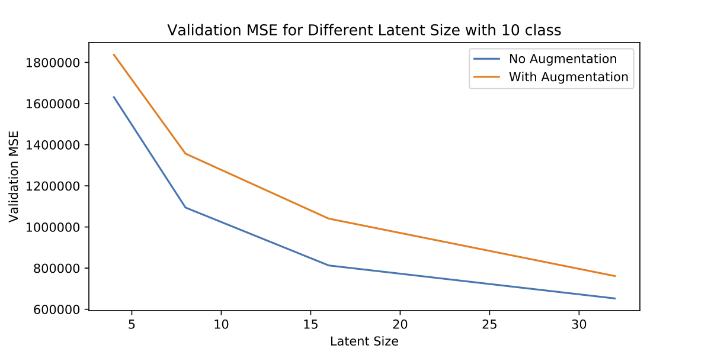
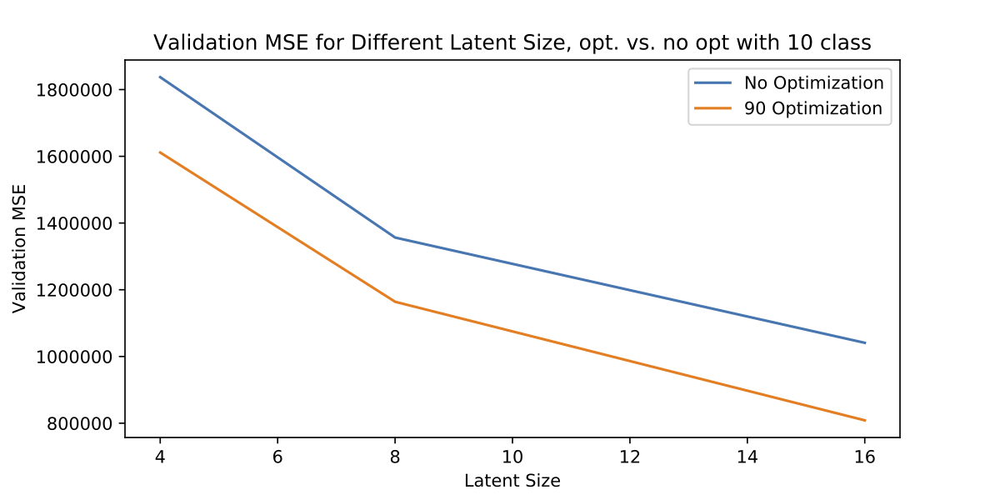
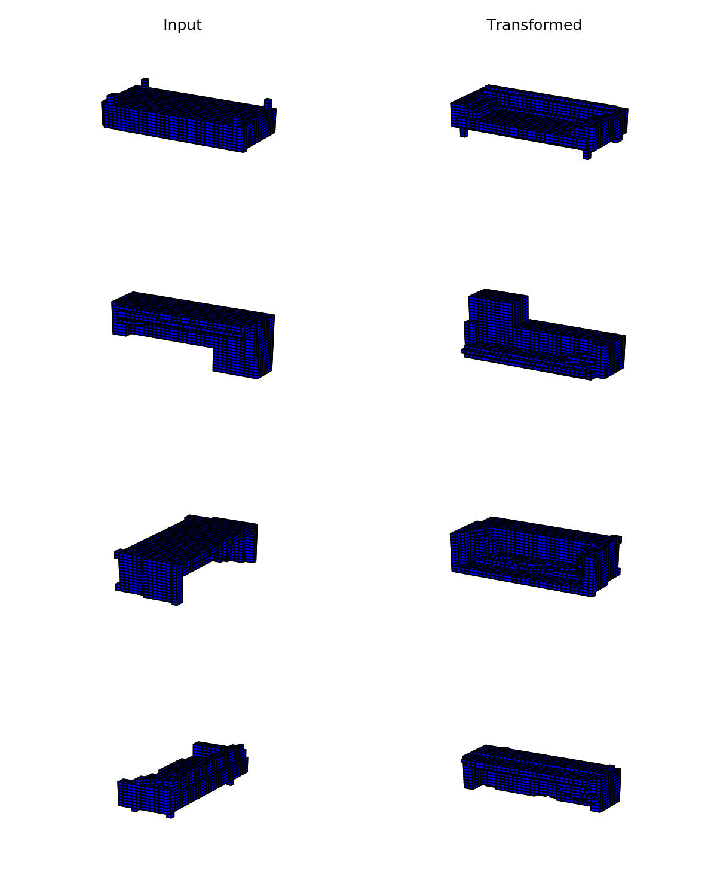

Open Research 5: 3D Disentangled Representations and Iteration Speed
3D Disentangled Representations
Last week I started my work on this by implementing a 3d VAE, and now it’s time to do something with it. The goal is to disentangle the orientation of an object from its shape, by optimizing over the orientation during training. But the plan is to start with the smallest problem possible, and quickly prove or disprove a hypothesis. I discuss why I think this approach is so important below.
A simple version of the problem is to limit the transforms to $90^{\circ}$ rotation. Ignore translations, scaling, or any messier rotation. Because of this small space of only 24 orientations brute force optimization is possible, so more difficult gradient descent optimization can be avoided until later. This is because although optimizing affine transforms is differentiable, local maxima are a serious problem, so optimizing affine transforms with SGD be difficult. This simplified case will still let us test the core questions:
- Is is easier (lower loss) for a VAE to encode a subset of orientations of an objects, rather than the full set?
- Is it possible to have a VAE learn this subset of orientations, by using an inner loop optimization process over the orientation before gradient descent is applied?
Learning only a subset of orientations is a form of disentangling the orientation and shape, because we will break the latent space into two parts, one to encode the orientation, and another to encode the object.
Single orientation > Many Orientations?
To show this disentangled representation is useful, I trained VAEs on datasets of all 24 orientations, as well as on a single orientation, and evaluated how they generalized to a test set of a similar distribution. Not surprisingly, the VAE trained on the single orientation performed better (lower reconstruction MSE). We could explain this by saying the limited capacity of a model meant it was more difficult to learn a more varied distribution of all orientations, rather than the single orientation.

Above we see how performance is lower across the board for different latent sizes with the full set of orientations compared to the single one.
If we are given a dataset of a single orientation, we can create a model for this single orientation, given a randomly oriented test image, we can optimize the rotation to find the orientation the model was trained on. In this toy example of using $90^{\circ}$ rotations, we will test each of the 24 rotations, and take the rotation with lowest loss as the one the model was trained on. We can show this is equivalent to optimizing the ELBO, but I’ll leave that for later.
Disentangled 3D Representations
Sadly datasets aren’t always packaged up nicely in a single orientation, so we’d like a model that can learn from random orientations, and still nicely generalize by only learning a single one, and optimizing over the rotation. We’ll try a basic method to do this, without any justification why it might work. Before each backward pass of SGD, we’ll optimize the orientation, and hope this encourages the model to only learn a subset of rotations.
The image below shows some examples of the randomly oriented images fed to the VAE on the left, and on the right the rotation the VAE learned.

And here is a graph of the MSE, with and without this orientation optimization. The loss looks similar to the loss in the above graph, where the model was trained without any augmentation.

This isn’t much of a proof of anything, so next week I’ll aim to get a couple metrics on this, as well as trying some more general transforms.
Iteration
I have spent too many times either philosophizing about a problem and not actually producing anything, or grinding away at a problem for too long without stopping to re-evaluate if that is really what I should be working on. The key is balancing both these things, by spending time narrowly focused trying to finish, but consistently reflecting on results and what matters.
I also find it helps to have a more clear distinction between doing something, and deciding what to do (or reflecting on a result to decide what to do next). Iteration helps with this, separating work into hypothesis and experiment.
Interestingly I also talked to a friend who is working on a startup, and he made this lesson more clear to me. He was improving his startup faster by getting more frequent feedback, rather than only focusing on the product. It’s much more effective to get real world feedback about your idea than to spend time theorizing about how it will work.
I made iteration speed the main goal this term (along with increasing the feedback I get while iterating, which is why I’m writing this). I thought it was so important that I literally wrote “iterate” it on my wall. A little weird, but less weird than the “increase variance in outcomes” I had on my wall last year.